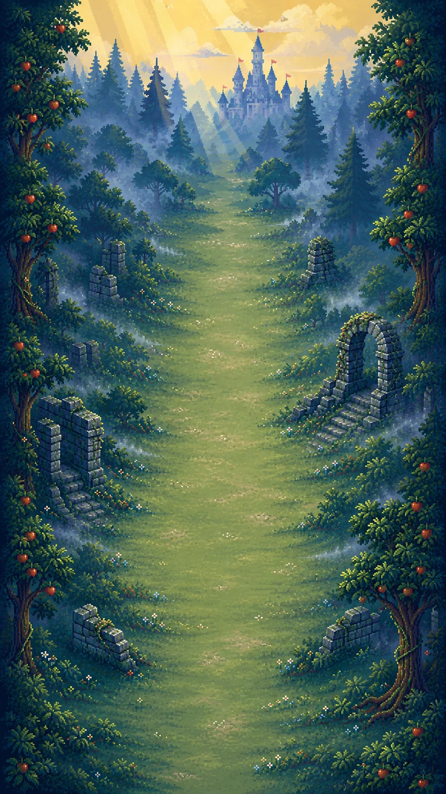

CONTEST EDITION
Escape
公式スキルガイド
魔法を選び、森を抜ける。
スキルの効果と組み合わせを知り、
次の試遊で試す一手を見つけよう。
20 掲載スキル
10 アクティブ
10 パッシブ

ESCAPE / TITLE ART
01 / LOADOUTS
おすすめ構成
候補に出たスキルから、目指す戦い方に合わせて選ぼう。
スキル候補はプレイごとに変わります。構成は取得を目指す組み合わせの例です。
02 / SKILL CODEX
スキル一覧
カードを開いて、効果とレベルごとの性能を確認。
スキルの取得と使い方
- 開始時や一部のウェーブ・ボスのクリア後に、最大3つの候補から1つを選びます。選択画面では R で候補を1回引き直せます。
- 新しく取得したアクティブは Q E R T のうち最初の空き枠に入ります。4枠が埋まったあとも、取得済みのアクティブは再取得で強化できます。
- 蓄力砲は割り当てキーを長押しし、離した瞬間に発射します。
- パッシブは専用欄に入り、取得すると自動で効果を発揮します。
- 同じスキルの再取得でLv.5まで強化できます。移動速度アップはLv.1で効果が最大です。
- 性能表のダメージは、通常の命中で減るHPの目安です。ボス戦ではオオモノ狩りの補正や、短時間に受けるダメージの上限で変動します。
03 / FIELD NOTES
組み合わせと立ち回り
敵の並びと動きに合わせて、魔法を重ねる。